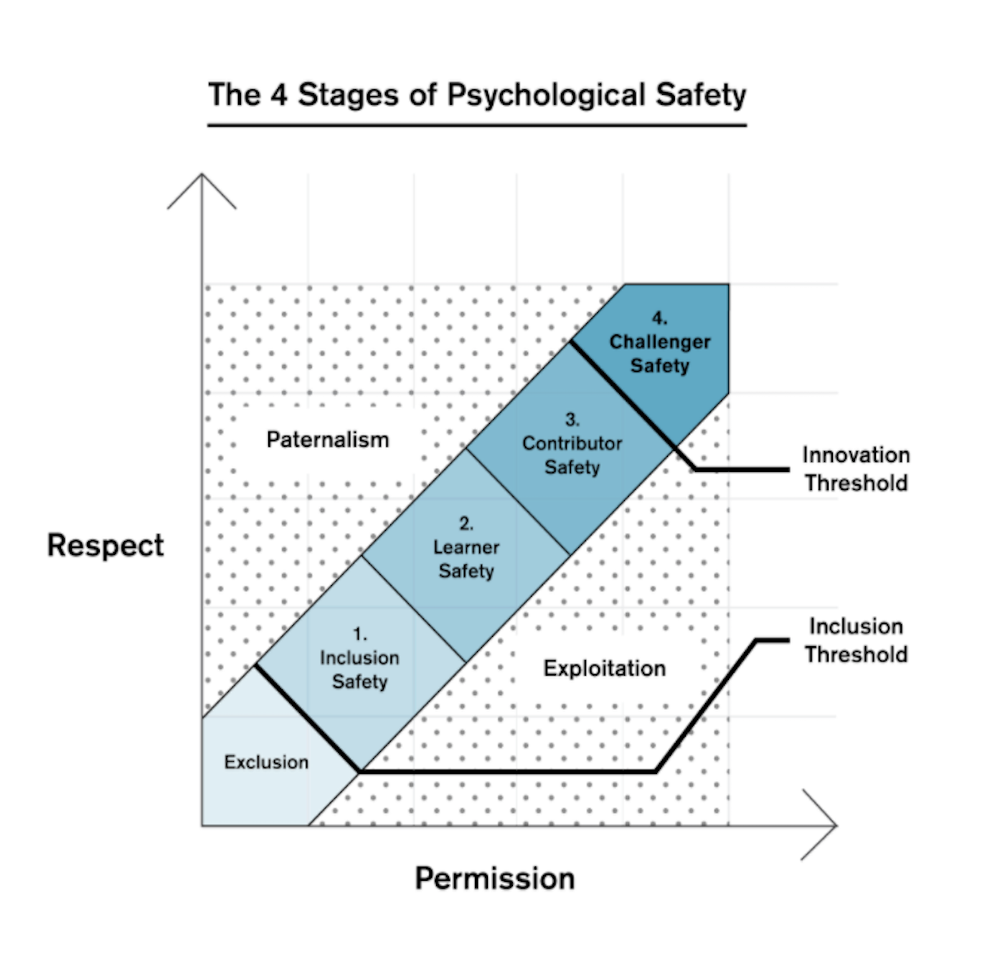

### Healthy workplace “A culture is strong when people work with each other, for each other. A culture is weak when people work against each other, for themselves.” – Simon Sinek “The culture of any organization is shaped by the worst behavior the leader is willing to tolerate.” – Steve Gruenert & Todd Whitaker // Name: Jukka Nikki, Identity: Programmer, Since: 6502 // Former leader of demo group, poet, software architect
In a positive work environment, people are likely to help those who have helped them. In a negative work environment, people who experience unprovoked mistreatment are likely to react with counteraggression, leading to a cycle of revenge. The level of civility or incivility within social encounters among people who regularly interact within a work environment tends to perpetuate itself.
### Googles team efficiency research [Who is on a team matters much less than how team members interact, structure their work, and view their contributions.](https://www.thinkwithgoogle.com/intl/en-emea/consumer-insights/consumer-trends/five-dynamics-effective-team/) [Psychologically safe teams accelerate learning and innovation by acknowledging mistakes and exploring new ideas.](https://www.thinkwithgoogle.com/intl/en-emea/consumer-insights/consumer-trends/five-dynamics-effective-team/)
 a condition in which human beings feel (1) included, (2) safe to learn, (3) safe to contribute, and (4) safe to challenge the status quo
### Amy Edmondson on Psychological Safety Leadership at its core is about harnessing others' efforts to achieve something no one can achieve alone. High standards in a context where there is uncertainty or interdependence (or both) combined with a lack of psychological safety comprise a recipe for suboptimal performance.
<img alt="missing psychological safety" src="images/psychological_safety_missing.png" width="100%">
“At a minimum, workplace drama causes inefficiency, frustration, and waste. The personal costs to those who work in organizations is immeasurable.” – David Emerald “I’m now much less of an asset to the company than I could be. I keep my head down and for self-preservation just do my work with little conversation with anyone. Yet the irony is this: in my self-preservation, I’m actually destroying myself. In bottling up my unexpressed feelings, I’m making myself sick emotionally and physically.” – Gary Chapman